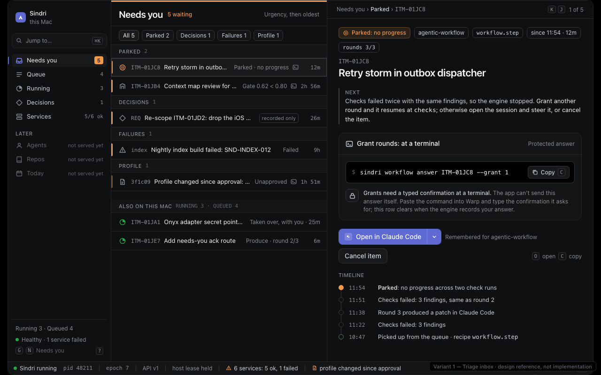
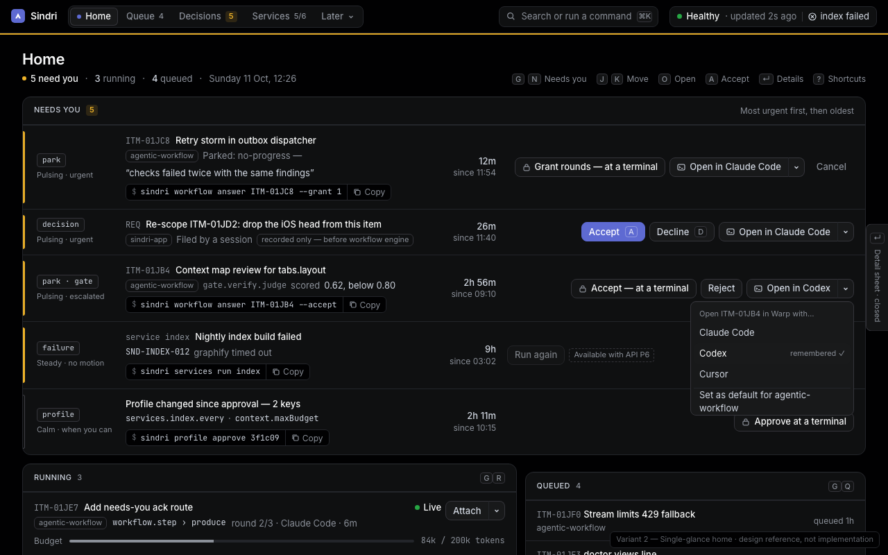
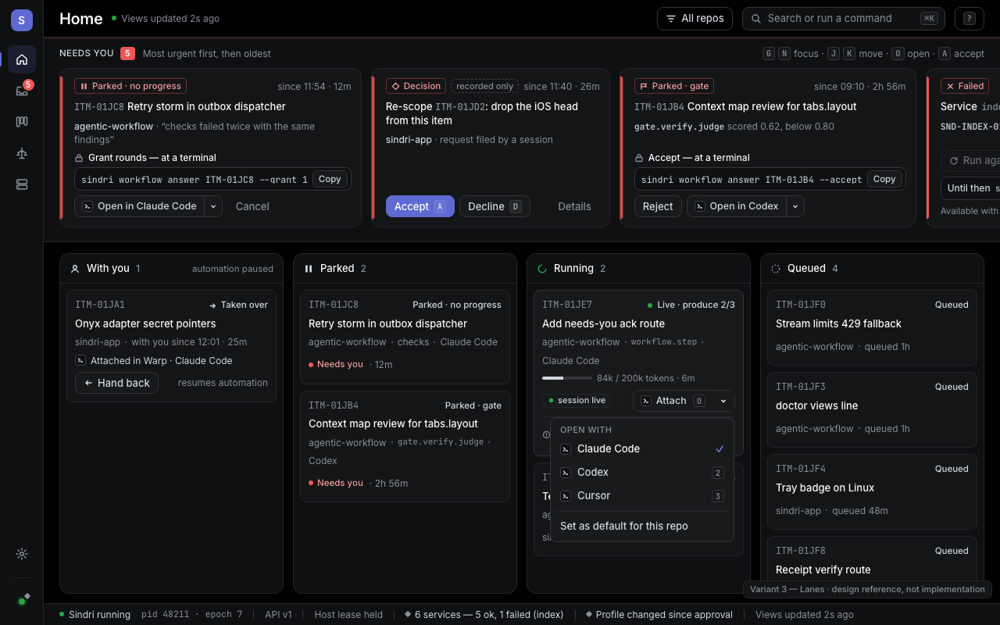

Sindri UI: three layouts, one fixture scenario
Same data in every variant, all inside docs/sindri/DESIGN.md. They differ on the two calls DESIGN.md and the specs don't settle: the window layout and the needs-you attention hue (each variant shows one candidate; the two choices are independent). Click a screenshot to open the live HTML. Design references, not the implementation.

1 · Triage inbox
Direction Linear's inbox: sidebar with counts · list · detail pane · health status bar
Rationale Keyboard and palette conventions transfer from Linear; the engine's "next" sentence and the answer sit beside the list
Attention Token deviation Attention tints at 12% and 30%; white at 18% inside the split button 
2 · Single-glance home (picked by the owner, with #f2994a)
Direction Top bar · one page: Needs you, Running and Queued, Health; detail in a side sheet
Rationale Passes the five-second test most literally; actions inline on each row
Attention Token deviation Amber tint at 14% on count chips; 3.5% white top highlight 
3 · Lanes
Direction Icon rail · pinned needs-you card strip · queue groups as board columns
Rationale Shows flow through With you → Parked → Running → Queued
Attention Token deviation Lighter coral #f39a9a for small chip text; coral at 14–45% for edges